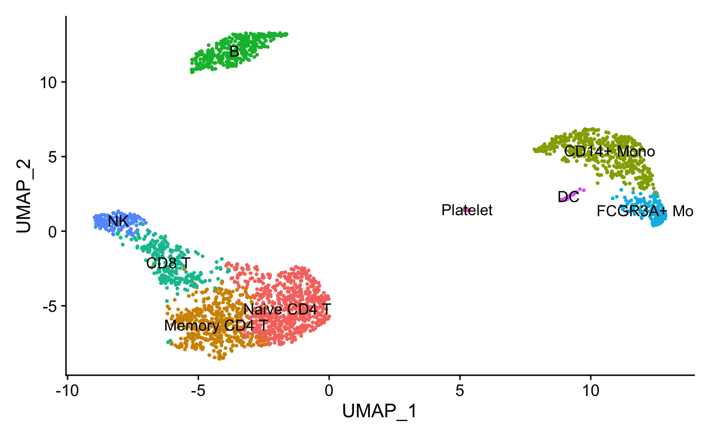
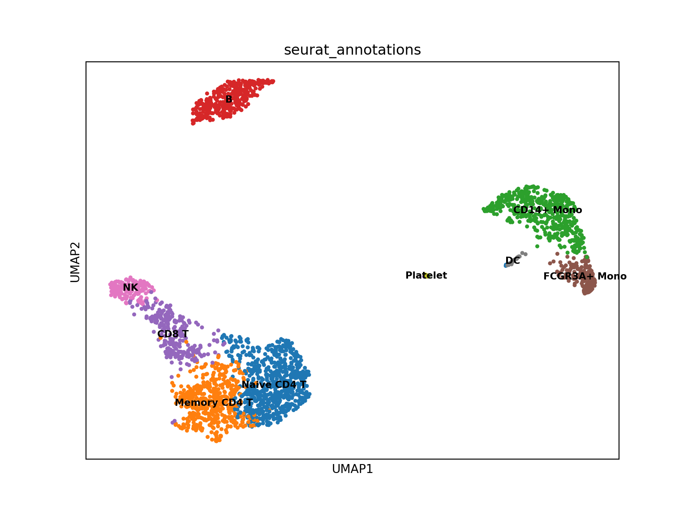
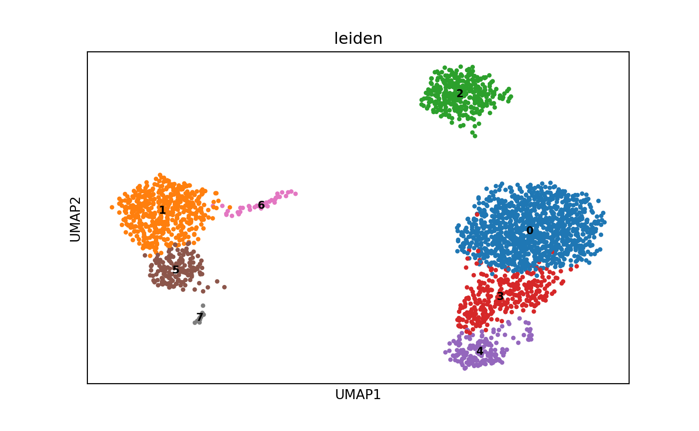

This vignette showcases how to convert from Seurat
object to AnnData files via an intermediate step thorugh h5Seurat files.
This allows interoperability between Seurat and Scanpy
Converting from Seurat to AnnData via h5Seurat
To showcase going from a Seurat object to an AnnData
file, we’ll use the processed version of the PBMC 3k dataset, available
on SeuratData;
this dataset was created following Seurat’s
PBMC 3k tutorial
InstallData("pbmc3k")
data("pbmc3k.final")
pbmc3k <- UpdateSeuratObject(pbmc3k.final)
pbmc3k
#> An object of class Seurat
#> 13714 features across 2638 samples within 1 assay
#> Active assay: RNA (13714 features, 2000 variable features)
#> 3 layers present: counts, data, scale.data
#> 2 dimensional reductions calculated: pca, umapTo see how this dataset was generated, please run
?pbmc3k.final
The dataset is annotated as below:

Converting the Seurat object to an AnnData file is a
two-step process. First, we save the Seurat object as an
h5Seurat file using the SaveH5Seurat() function. For more
details about saving Seurat objects to h5Seurat files,
please see the h5Seurat-load vignette; after the file is saved, we can
convert it to an AnnData file for use in Scanpy using the
Convert() function. The conversion process handles both
expression matrices and metadata, including support for Seurat v5
objects with multiple layers.
SaveH5Seurat(pbmc3k, filename = "pbmc3k.h5Seurat")
Convert("pbmc3k.h5Seurat", dest = "h5ad")We can view the AnnData file in Scanpy by using the
read_h5ad function
import scanpy
adata = scanpy.read_h5ad("pbmc3k.h5ad")
adata
#> AnnData object with n_obs × n_vars = 2638 × 13714
#> obs: 'orig.ident', 'nCount_RNA', 'nFeature_RNA', 'seurat_annotations', 'percent.mt', 'RNA_snn_res.0.5', 'seurat_clusters'
#> var: 'vst.mean', 'vst.variance', 'vst.variance.expected', 'vst.variance.standardized', 'vst.variable'
#> uns: 'n_variable_features', 'neighbors', 'seurat'
#> obsm: 'X_pca', 'X_umap'
#> varm: 'PCs'
#> obsp: 'connectivities', 'distances'And visualize the UMAP with cluster annotations:
import scanpy as sc
import matplotlib.pyplot as plt
# Plot with proper categorical coloring
sc.pl.umap(adata, color='seurat_annotations', legend_loc='on data', legend_fontsize=8)
Converting from AnnData to Seurat via h5Seurat
To shocwcase going from an AnnData file to a Seurat
object, we’ll use a processed version of the PBMC 3k dataset; this
dataset was processed using Scanpy following Scanpy’s
PBMC 3k tutorial
url <- "https://seurat.nygenome.org/pbmc3k_final.h5ad"
curl::curl_download(url, basename(url))To see how this dataset was created, please see this script
import scanpy as sc
import matplotlib.pyplot as plt
adata = sc.read_h5ad("pbmc3k_final.h5ad")
adata
#> AnnData object with n_obs × n_vars = 2638 × 1838
#> obs: 'n_genes', 'percent_mito', 'n_counts', 'leiden'
#> var: 'gene_ids', 'n_cells', 'highly_variable', 'means', 'dispersions', 'dispersions_norm'
#> uns: 'leiden', 'neighbors', 'pca', 'umap'
#> obsm: 'X_pca', 'X_umap'
#> varm: 'PCs'
#> obsp: 'distances', 'connectivities'
sc.pl.umap(adata, color='leiden', legend_loc='on data', legend_fontsize=8)
Converting the AnnData file to a Seurat object is also a
two-step process. First, convert the AnnData file to an h5Seurat file
using the Convert() function; this conversion supports both
standard AnnData files and those with spatial data or multiple assay
layers. Then, we load the h5Seurat file into a Seurat
object using the LoadH5Seurat() function; for more details
about loading Seurat objects from h5Seurat files, please
see the h5Seurat-load vignette.
Convert("pbmc3k_final.h5ad", dest = "h5seurat", overwrite = TRUE)
pbmc3k <- LoadH5Seurat("pbmc3k_final.h5seurat")
pbmc3k
#> An object of class Seurat
#> 13714 features across 2638 samples within 1 assay
#> Active assay: RNA (13714 features, 1838 variable features)
#> 3 layers present: counts, data, scale.data
#> 2 dimensional reductions calculated: pca, umap
DimPlot(pbmc3k, reduction = "umap", label = TRUE, pt.size = 0.5, group.by = "leiden") +
NoLegend()
Visium Spatial Data Conversion
Converting Spatial AnnData to Seurat
We’ll use mouse brain spatial transcriptomics data (stxBrain) from SeuratData to demonstrate Visium data conversion:
# Load stxBrain data from SeuratData
InstallData("stxBrain")
stxBrain <- LoadData("stxBrain", type = "anterior1")
stxBrain <- NormalizeData(stxBrain)
SpatialFeaturePlot(stxBrain, features = "Ptprc")
# Save as h5Seurat, then convert to h5ad
SaveH5Seurat(stxBrain, filename = "stxBrain.h5Seurat", overwrite = TRUE)
Convert("stxBrain.h5Seurat", dest = "h5ad", overwrite = TRUE)We can now load the AnnData file in Python and visualize it using Squidpy:
import squidpy as sq
import scanpy as sc
import matplotlib.pyplot as plt
adata = sc.read_h5ad("stxBrain.h5ad")
# Note: The Seurat image name 'anterior1' becomes the library_id
# Image resolution keys are standardized as 'hires' and 'lowres'
# By default, seurat only stores lowres images. it is copied to hires to avoid errors.
sq.pl.spatial_scatter(
adata,
color="Ptprc",
library_id="anterior1",
img_res_key="lowres",
size=1.5
)
plt.show()
Converting Spatial (Visium) Anndata to Seurat
Data source: Spatially resolved multiomics of human cardiac niches
Single Library Example
First, let’s work with a single library, HCAHeartST11702008:
# Copy single-library heart data from testdata
file.copy(system.file("testdata", "vis.heart.single.h5ad", package = "srtdisk"),
"vis.heart.single.h5ad", overwrite = TRUE)
# Convert to h5seurat
Convert("vis.heart.single.h5ad", dest = "h5seurat", overwrite = TRUE)
# Load as Seurat object
heart_single <- LoadH5Seurat("vis.heart.single.h5seurat")
heart_single
SpatialFeaturePlot(heart_single, features = "PTPRC")Multi-Library Example
When an h5ad file contains multiple Visium libraries,
LoadH5Seurat returns a list of Seurat objects (one per
library):
# Copy multi-library heart data from testdata
file.copy(system.file("testdata", "vis.heart.h5ad", package = "srtdisk"), "vis.heart.h5ad",
overwrite = TRUE)
# Convert to h5seurat
Convert("vis.heart.h5ad", dest = "h5seurat", overwrite = TRUE)
# Load - returns a list of Seurat objects
heart_list <- LoadH5Seurat("vis.heart.h5seurat")
# Check the structure
cat("Number of libraries:", length(heart_list), "\n")
cat("Library names:", names(heart_list), "\n")
# Each library is a separate Seurat object
heart_list[[1]]We can plot each library separately:
# Plot PTPRC for the first library
SpatialFeaturePlot(heart_list[[2]], features = "PTPRC")Session Info
sessionInfo()
#> R version 4.5.1 (2025-06-13)
#> Platform: aarch64-apple-darwin20
#> Running under: macOS Tahoe 26.0.1
#>
#> Matrix products: default
#> BLAS: /Library/Frameworks/R.framework/Versions/4.5-arm64/Resources/lib/libRblas.0.dylib
#> LAPACK: /Library/Frameworks/R.framework/Versions/4.5-arm64/Resources/lib/libRlapack.dylib; LAPACK version 3.12.1
#>
#> locale:
#> [1] en_US.UTF-8/en_US.UTF-8/en_US.UTF-8/C/en_US.UTF-8/en_US.UTF-8
#>
#> time zone: America/Indiana/Indianapolis
#> tzcode source: internal
#>
#> attached base packages:
#> [1] stats graphics grDevices utils datasets methods base
#>
#> other attached packages:
#> [1] srtdisk_0.1.0 stxKidney.SeuratData_0.1.0
#> [3] stxBrain.SeuratData_0.1.2 ssHippo.SeuratData_3.1.4
#> [5] pbmcref.SeuratData_1.0.0 pbmc3k.SeuratData_3.1.4
#> [7] panc8.SeuratData_3.0.2 SeuratData_0.2.2.9002
#> [9] Seurat_5.3.0 SeuratObject_5.2.0
#> [11] sp_2.2-0 reticulate_1.44.0
#>
#> loaded via a namespace (and not attached):
#> [1] RColorBrewer_1.1-3 jsonlite_2.0.0 magrittr_2.0.4
#> [4] spatstat.utils_3.2-0 farver_2.1.2 rmarkdown_2.30
#> [7] fs_1.6.6 ragg_1.5.0 vctrs_0.6.5
#> [10] ROCR_1.0-11 spatstat.explore_3.5-3 htmltools_0.5.8.1
#> [13] curl_7.0.0 sass_0.4.10 sctransform_0.4.2
#> [16] parallelly_1.45.1 KernSmooth_2.23-26 bslib_0.9.0
#> [19] htmlwidgets_1.6.4 desc_1.4.3 ica_1.0-3
#> [22] plyr_1.8.9 plotly_4.11.0 zoo_1.8-14
#> [25] cachem_1.1.0 igraph_2.2.1 mime_0.13
#> [28] lifecycle_1.0.4 pkgconfig_2.0.3 Matrix_1.7-4
#> [31] R6_2.6.1 fastmap_1.2.0 fitdistrplus_1.2-4
#> [34] future_1.67.0 shiny_1.11.1 digest_0.6.37
#> [37] SeuratDisk_0.1.0 patchwork_1.3.2 tensor_1.5.1
#> [40] RSpectra_0.16-2 irlba_2.3.5.1 textshaping_1.0.4
#> [43] labeling_0.4.3 progressr_0.17.0 spatstat.sparse_3.1-0
#> [46] httr_1.4.7 polyclip_1.10-7 abind_1.4-8
#> [49] compiler_4.5.1 bit64_4.6.0-1 withr_3.0.2
#> [52] S7_0.2.0 fastDummies_1.7.5 MASS_7.3-65
#> [55] rappdirs_0.3.3 tools_4.5.1 lmtest_0.9-40
#> [58] otel_0.2.0 httpuv_1.6.16 future.apply_1.20.0
#> [61] goftest_1.2-3 glue_1.8.0 nlme_3.1-168
#> [64] promises_1.4.0 grid_4.5.1 Rtsne_0.17
#> [67] cluster_2.1.8.1 reshape2_1.4.4 generics_0.1.4
#> [70] hdf5r_1.3.12 gtable_0.3.6 spatstat.data_3.1-9
#> [73] tidyr_1.3.1 data.table_1.17.8 spatstat.geom_3.6-0
#> [76] RcppAnnoy_0.0.22 ggrepel_0.9.6 RANN_2.6.2
#> [79] pillar_1.11.1 stringr_1.5.2 spam_2.11-1
#> [82] RcppHNSW_0.6.0 later_1.4.4 splines_4.5.1
#> [85] dplyr_1.1.4 lattice_0.22-7 bit_4.6.0
#> [88] survival_3.8-3 deldir_2.0-4 tidyselect_1.2.1
#> [91] miniUI_0.1.2 pbapply_1.7-4 knitr_1.50
#> [94] gridExtra_2.3 scattermore_1.2 xfun_0.53
#> [97] matrixStats_1.5.0 stringi_1.8.7 lazyeval_0.2.2
#> [100] yaml_2.3.10 evaluate_1.0.5 codetools_0.2-20
#> [103] tibble_3.3.0 cli_3.6.5 uwot_0.2.3
#> [106] xtable_1.8-4 systemfonts_1.3.1 jquerylib_0.1.4
#> [109] dichromat_2.0-0.1 Rcpp_1.1.0 globals_0.18.0
#> [112] spatstat.random_3.4-2 png_0.1-8 spatstat.univar_3.1-4
#> [115] parallel_4.5.1 pkgdown_2.1.3 ggplot2_4.0.0
#> [118] dotCall64_1.2 listenv_0.9.1 viridisLite_0.4.2
#> [121] scales_1.4.0 ggridges_0.5.7 purrr_1.1.0
#> [124] crayon_1.5.3 rlang_1.1.6 cowplot_1.2.0
#> [127] formatR_1.14